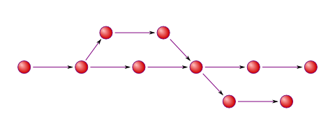
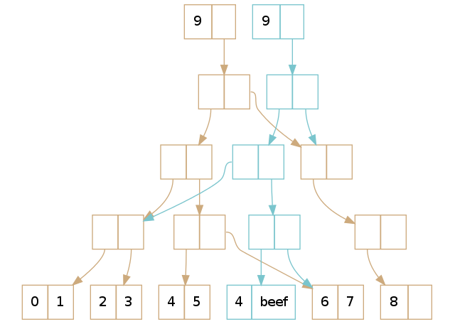
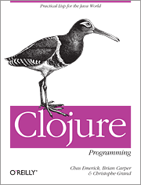
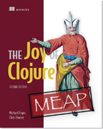

A gentle introduction to Clojure
(gentle (introduce Clojure)) - Talking with a LISP
By Guy Taylor / @xsyn
(def @xsyn)
Ok, so who am I and why do I know anything?
I don't...
- I've been playing with Clojure for about 3 years now - Making me a Clojure blue belt.
- I'm a freelancer, currently building an analytics cluster for TYME, a mobile banking solutions provider.
- I'm the father of 5 month old twins (So I know a thing or two about concurrency).
(def introduction)
“If you want everything to be familiar, you will never learn anything new. cuz it can't be significantly different from what you already know and not drift away from the familiarity.” -- Rich Hickey
Sure...but why Clojure?
Let's start by identifying what it is
(clojure.set/intersection Clojure Scala)
Clojure and Scala are similiar in a number of ways
- Functional language
- Hosted on the JVM
- Java interop
(clojure.set/difference Clojure Scala)
- Dynamically typed
- Enforced immutability
- It's a LISP OMG! WTF? Brackets ?! Interrobang!
(def immutability)
The hardest button to button...until..
(def LISP)
The entire LISP universe is based around the following structure:
(verb noun noun)

(so? Clojure)
- LISPs are awesome
- Really cool tooling
- I've never had so much fun with a programming language
- Worth the personal growth
(def scalar-literals)
Characters
\c ; Character
(class \c) ;= java.lang.Character
\space
\newline
\formfeed
\return
\backspace
\tab
Strings
"hello" ; String
(class "hello") ; = java.lang.String
;BUT strings are also collections. Hold that thought...
(def scalar-literals)
Numbers
42, 0xff, 2r111, 040 ; long (64 bit signed integer)
3.14, 6.02139864 ; double (64 bit floating point decimal)
42N ; clojure.lang.BigInt (arbitary precision integer)
0.01M; java.math.BigDecimal (arbitary precision signed floating point decimal)
22/7; clojure.lang.Ratio
(def scalar-literals)
Booleans
nil; nil
true; true
false; false
(= true 1); false
(= false nil); false
(def collection-literals)
'(a b :name 2) ; list
[a b :name 2] ; vector
#{1 2 3} ; set
{:name Guy :nick xsyn} ; map
(def collection-literals)
Lists
'(1 2 3) ; (1 2 3)
(list 1 2 3) ; (1 2 3)
(conj 4 (1 2 3) ; (4 1 2 3)
(first '(1 2 3)) ; 1
(second '(1 2 3)) ; 2
(nth '(1 2 3) 2) ; 3
;; Read in a linear order, NOT indexed, useful for small collections
;; Internally stored as a chain of values
(def collection-literals)
Vectors
[1 2 3] ; [1 2 3]
(vec '(1 2 3)) ; [1 2 3]
(conj 4 (1 2 3) ; [1 2 3 4]
(next [1 2 3]) ; [2 3]
(= '(1 2 3) [1 2 3]) ; true
;; Indexed, good for large collections, more frequently used than lists
;; Internally stored as trees
(def collection-literals)
Sets
#{1 2 3} ; #{1 2 3}
(set [1 1 1 2 2 2 3 3 3]) ; #{1 2 3}
(clojure.set/union #{1 2 3} #{4 5}) ; #{1 2 3 4 5}
(clojure.set/difference #{1 2 3} #{2 3}) ; #{1}
(clojure.set/intersection #{1 2 3} #{2 3}) ; #{2 3}
;; Unique items in set, mathematical sets
(def collection-literals)
Maps
{:name "Guy" :nick "xsyn" :age 34} ; {:age 34, :name "Guy", :nick "xsyn"}
(def xsyn {:name "Guy" :nick "xsyn" :age 34}) ; #'/xsyn
(keys xsyn) ; (:age :name :nick)
(vals xsyn) ; (34 "Guy" "xsyn")
(get xsyn :name} ; ("Guy")
(:name xsyn) ; ("Guy")
(merge xsyn {:languages {:clojure true
:scala false}))
; {:name "Guy" :nick "xsyn" :age 34 :languages {:clojure
; true :scala false}
(get-in {:name "Guy" :nick "xsyn" :age 34 :languages {:clojure
true :scala false} [:nick :languages]}
(get-in xsyn [:languages :scala]) ;nil
(get-in {:name "Guy" :nick "xsyn" :age 34 :languages {:clojure true
:scala true}} [:languages :clojure]) ; true
;; Do not retain sequence
(def PersistentVector)
(def brown [0 1 2 3 4 5 6 7 8])
(def blue (assoc brown 5 'beef))

(def brown [0 1 2 3 4 5 6 7 8])
(def blue (assoc brown 5 'beef))
Source: http://hypirion.com/musings/understanding-persistent-vector-pt-1
(defn f [x] (f x))
Functions are the verbs of Clojure, everything you do you do through f [x].
(defn count-to-infinity [number]
"Print numbers to infinity. You should probably not run this"
(println count-to-infinity (inc number)))
(defn fibs []
"Fibonnaci sequence demo function"
(map first
(iterate
(fn [[a b]] [b (+ a b)]) [0 1])))
Functions turn values into values.
(defmacro f [x] (f x))
Macros turn code into code.
(defmacro ignore
"Cancels the evaluation of an expression, returning nil instead."
[expr]
nil)
user=> (ignore (+ 1 2))
nil
(ns foo.bar)
Mappings from symbols to vars and classes
(ns data.core
(:use [incanter.core]
[incanter.io]
[incanter.charts]
[data.helpers]
[clj-time.format :as t]))
(defn datemap [date]
"Date formatter"
(parse (t/formatter "YY/MM/dd") date))
(.interop Java)
(defn fetch-url[address]
(with-open [stream (.openStream (java.net.URL. address))]
(let [buf (java.io.BufferedReader.
(java.io.InputStreamReader. stream))]
(apply str (line-seq buf)))))
#'user/fetch-url
user=> (fetch-url "http://google.com")
"<!doctype html>...
...</html>"
;; Importing Java libraries
(import '(java.io FileReader))
Leiningen
for automating Clojure projects without setting your hair on fire

Building a project
$ lein new foobar
Generating a project called foobar based on the 'default' template.
To see other templates (app, lein plugin, etc), try `lein help new`.
$ cd foobar && ls
LICENSE README.md doc project.clj resources src test
Boilerplate Project.clj
(defproject foobar "0.1.0-SNAPSHOT"
:description "FIXME: write description"
:url "http://example.com/FIXME"
:license {:name "Eclipse Public License"
:url "http://www.eclipse.org/legal/epl-v10.html"}
:dependencies [[org.clojure/clojure "1.5.1"]])
Actual Project.clj
(defproject data "0.1-alpha"
:description "Data shunting playground"
:license {:name "Eclipse Public License"
:url "http://www.eclipse.org/legal/epl-v10.html"}
:dependencies [[org.clojure/clojure "1.5.1"]
[incanter/incanter-core "1.5.4"]
[incanter/incanter-io "1.5.4"]
[incanter/incanter-charts "1.5.4"]
[incanter/incanter-excel "1.5.4"]
[clj-time "0.6.0"]
[org.clojure/data.json "0.2.1"]
[org.apache.hadoop/hadoop-core "1.1.2"]
[org.clojure/data.csv "0.1.2"]]
:main data.core
:jvm-opts ["-Xmx6G" "-server" "-Djsse.enableSNIExtension=false"] )
(def ungoogleable)
A bunch of symbols that you'll see, but will find hard to google
Some Examples:
# ; The Dispatch Macro
#{ ; The set macro, we've already seen this
#_ ; The discard macro
#" ; The regular expression macro
#( ; The function macro
#' ; The var macro
% ; Arguement placeholder
@ ; Deref macro
^ ; Metadata
(lazy-seq (doc introductions))
Books

Clojure Programming - Chas Emerick

The Joy of
Clojure - Michael Fogus
(v2 release 31 May)
(lazy-seq (doc introductions))
Videos
http://www.infoq.com/author/Rich-Hickey
- Are we there yet - Rich Hickey
- The value of values - Rich Hickey
- Simple made easy - Rich Hickey
While these are videos are by Clojure's author, they shine light on the philisophical underpinnings of Clojure, and are worth watching even if you never touch it.
(lazy-seq (doc introductions))
Online
- Clojure-Koans: http://clojurekoans.com
- Aphyr’s Clojure from the ground up: http://aphyr.com/posts/301-clojure-from-the-ground-up-welcome
- IRC: freenode.irc.net - #Clojure #Clojure.za
- BUILD SOMETHING
(questions? presentation)
(thank you) (follow @xsyn)
Presentation available on Github at: https://github.com/xsyn/intro-to-clojure